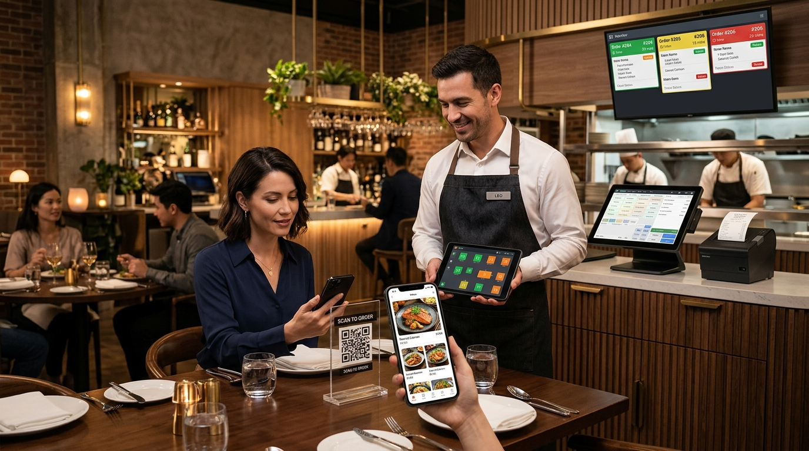
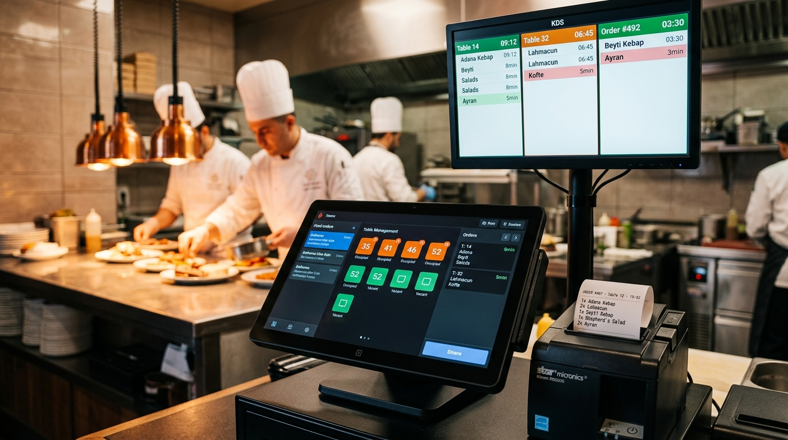
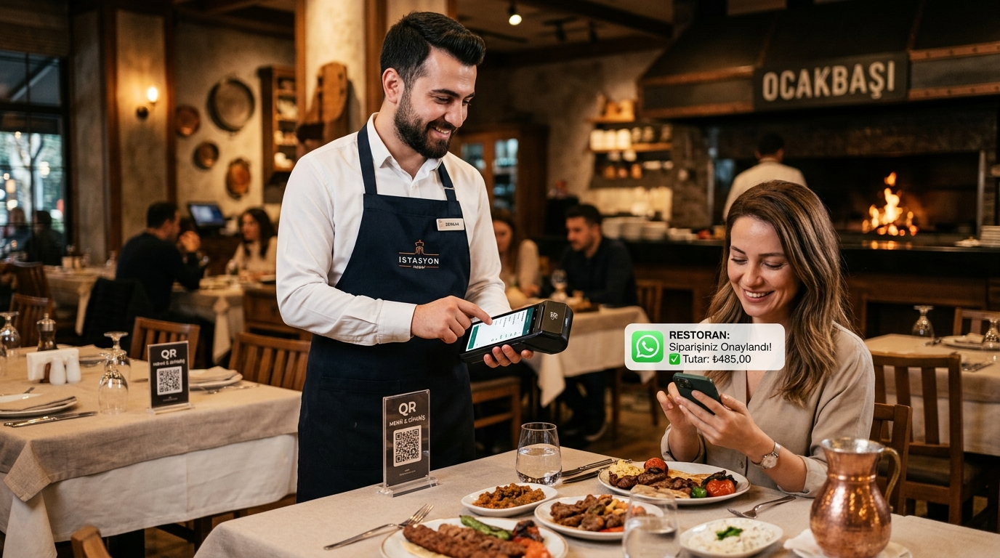
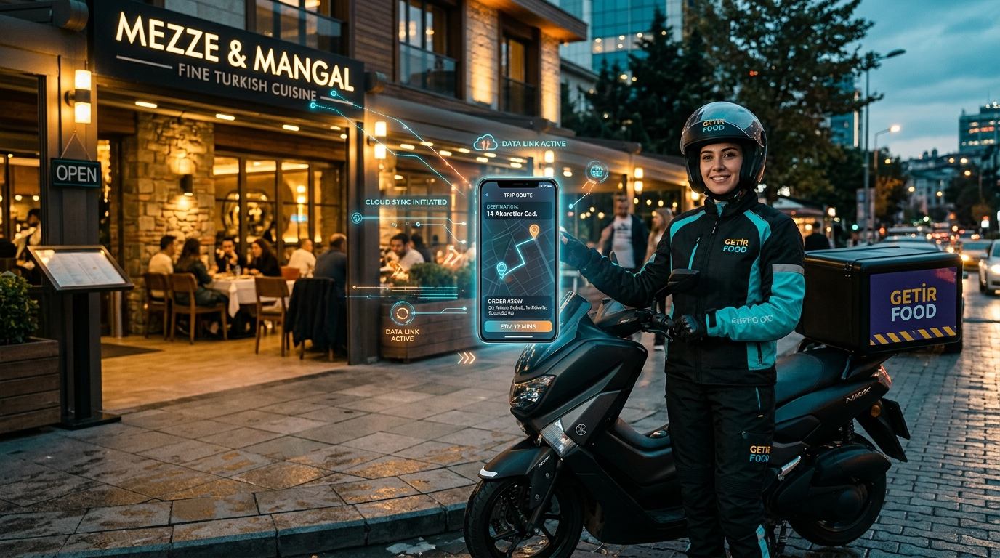
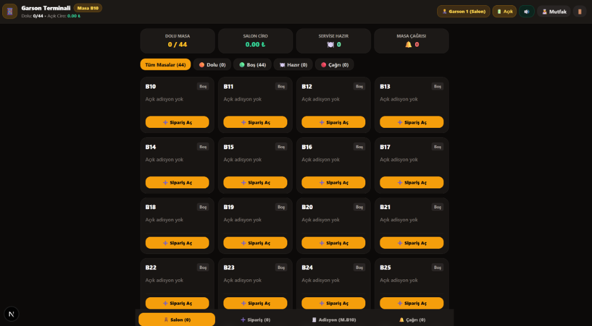
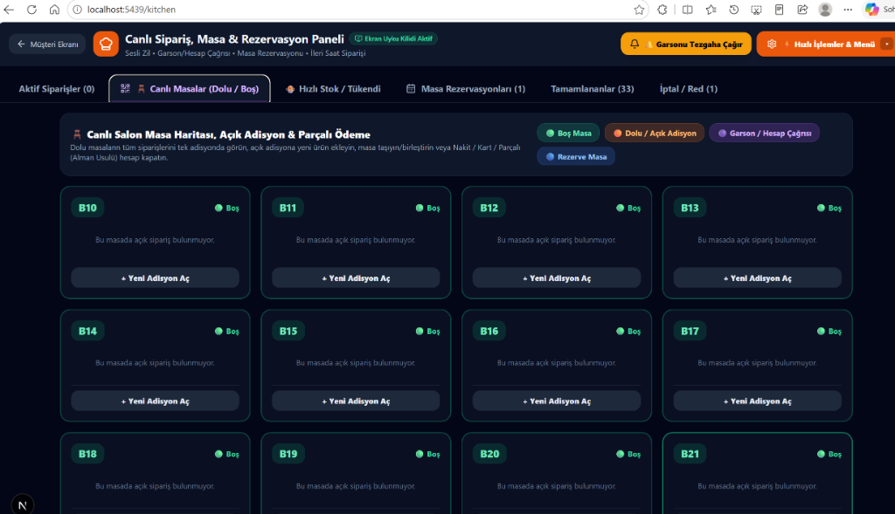
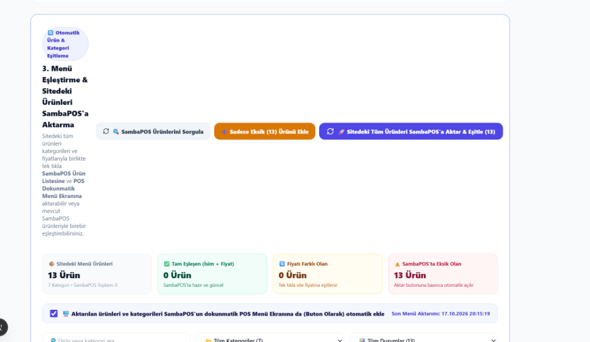
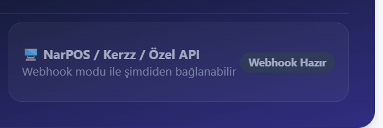

Müşteri vitrininiz Netlify / Özel Alan Adınız üzerinde 7/24 kesintisiz sipariş alırken; Mutfak KDS, Garson Cep Terminali, Kurye Navigasyon Ekranı, Ücretsiz WhatsApp OTP ve SambaPOS V5 Canlı Masa Senkronizasyonu tamamen kendi kasa bilgisayarınızda çalışır.

Siparişin müşteriden mutfağa, WhatsApp'tan SambaPOS'a ve Garson terminalinden kasaya nasıl aktığını gösteren 3 özel tanıtım videosu:
Müşterinin seçmeli menü/porsiyon siparişi vermesi, 6 haneli ücretsiz WhatsApp OTP doğrulaması, mutfakta çift tıklama korumalı (⏳ ONAYLANIYOR...) onay ve otomatik 80mm fiş basımı.
POS modülü açıkken Yeni Siparişler, Adisyon İstendi ve Hazır masa durumlarının canlı çekilmesi; erken kalkanın ürünlerini seçip adisyondan düşme ve parçalı ödeme.
Admin panelinden Tek Masa, Tek Paket, Tek Gel-Al veya ikili/üçlü kanal seçimi, siteden masa isimlerini düzenleme/silme, kayıtlı müşteri arama ve siteden SambaPOS'a müşteri aktarımı.
Kasa, mutfak, salon garsonları, masadaki müşteriler ve yoldaki kuryeler tek bir merkezden senkronize çalışır. (Görselleri büyütmek için üzerlerine tıklayabilirsiniz).
Masada QR okutan müşteri, el terminaliyle sipariş alan garson, 80mm fiş kesen kasa ve mutfak KDS ekranı aynı anda haberleşir.

Yeni sipariş geldiğinde sesli zil çalar, istasyon bazlı (Izgara, Soğuk, İçecek) filtrelenir, tek tıkla onaylanır ve 80mm yazıcıdan otomatik fiş çıkar.

Garsonlar ek cihaz maliyetine girmeden kendi telefonlarından Wi-Fi ile masalara sipariş girer; müşteriler WhatsApp'tan anlık bildirim alır.

Paket kuryeye atandığı anda müşteriye WhatsApp mesajı gider, kurye telefonundan tek tıkla müşteriyi arar veya Google Haritalar yol tarifini açar.
SambaPOS V5 canlı masa eşleşmesi, Mutfak canlı masa haritası, Admin sipariş türü (kanal) seçimi ve masa yönetimi ekranları:

SambaPOS'taki B10, B12 (Adisyon İstendi), B19, B29, M14, M15, M30 gibi açık masalar, renk kodları (#CA6919 / #631816) ve içerisindeki adisyon kalemleriyle birlikte Garson ve Mutfak ekranlarına canlı yansır.

POS modülü açıkken SambaPOS'taki masa durumlarını, POS modülü kapalıyken ise standart site masa adisyonlarını tek ekranda gösterir; masa taşıma, birleştirme ve parçalı tahsilat imkanı sunar.

Admin panelinden ister Tek Masa, ister Tek Paket, ister Tek Gel-Al, isterseniz Masa+Gel-Al, Paket+Gel-Al, Masa+Paket veya Tümü kombinasyonlarını tek tıkla aktif edin.

Masa isimlerini (B10-B31, M10-M31) siteden ekleyin, kalem ikonuyla yeniden adlandırın veya silin; yaptığınız değişiklikler otomatik olarak SambaPOS'a ve QR kodlara yansısın.
Restoranınızın günlük operasyonunu hızlandıran ve maliyetleri sıfırlayan temel avantajlar:
SambaPOS modülü açıksa masa durumlarını ve açık adisyonları POS'tan canlı çeker; kapalıysa sitenin kendi standart masa adisyon sistemi devreye girer.
Sitede kayıtlı müşterileri (Ad, Telefon, Adres) ve masa listesini tek yönlü olarak SambaPOS V5 veritabanına otomatik aktarır.
Binlerce müşteri arasında isim, telefon veya adresle anlık arama yaparak Kasa POS siparişinde ve Cari (Veresiye) defterinde tek tıkla müşteri seçin.
Sipariş onaylanırken butonu anında kilitler (⏳ ONAYLANIYOR...), POS ve WhatsApp işlemlerini arka planda yürüterek mükerrer kayıtları önler.
Masadan erken kalkanın yediği ürünleri seçip adisyondan düşün, ikram (0 ₺) yapın, Nakit+Kart bölün veya müşterinin Veresiye/Cari hesabına yazın.
Render.com ücretsiz 7/24 bulut WhatsApp QR köprüsü ve tek tıkla wa.me doğrulaması ile Kasa PC kapalıyken bile 6 haneli OTP kodu gönderin; akşam 80mm Z raporu alın.
Paket servis fişinin altında kuryenin kamerayla okutup doğrudan navigasyon başlatabileceği Google Haritalar QR kodu ve mutfakta 👑 VIP Müşteri / İlk Sipariş rozeti yer alır.
Belirlenen sepet tutarı aşıldığında teslimat ücretini otomatik sıfırlayan canlı ilerleme çubuğu ve müşterinin istediği kadar puan kullanabildiği (iptalde iadeli) sadakat sistemi.
Müşteri siparişi onay beklerken iptal edebilir veya mutfağa anlık ek not iletebilir; yönetici porsiyon/ekstra dahil canlı önizlemeli toplu % zam/indirim uygulayabilir.